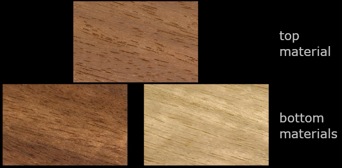

<html>
    <head>
        <title>Video experiment</title>
    
        <!--Loading JATOS server library if available-->
        <script src="jatos.js"></script>
        <!--Loading the jsPsych Library-->
        <script src="jspsych/jspsych.js"></script>
        <!--Loading plugin for showing video stimuli-->
        <!--This plugin is edited, mainly for support of video looping-->
        <script src="jspsych/plugin-edited-video-button-response.js"></script>
        <!--<script src="jspsych/plugin-video-button-response.js"></script>-->
        <!--Submitting form information-->
        <script src="jspsych/plugin-survey-html-form.js"></script>
        <!--Loading plugin for end of the trial-->
        <script src="jspsych/plugin-html-button-response.js"> </script>
        <!--Loading plugin for start of the trial-->
        <script src="jspsych/plugin-html-keyboard-response.js"> </script>
        <!-- Loading plugin used for instuctions-->
        <script src="jspsych/plugin-instructions.js"> </script>
        <!--Loading plugin for preloading the videos-->
        <script src="jspsych/plugin-preload.js"> </script>
        <!--Loading plugin for browser check-->
        <script src="jspsych/plugin-browser-check.js"> </script>
        <!--Loading plugin for custom function calls (storing parameters)-->
        <script src="jspsych/plugin-call-function.js"> </script>

        <!--Uses JSON variable in JavaScipt file-->
        <script src="protocols.js"></script>

        <!--Loading stylesheet-->
        <link href="jspsych/jspsych.css" rel="stylesheet" type="text/css" />
        
    </head>
    
    <body>
        <div id="jspsych-target"></div>
    </body>


    <script>

    // setup
    var runOnServer = (typeof jatos !== 'undefined');
    var remoteStimuli = true;
    var fromProlific = false;
    const pathToVideos = remoteStimuli ? "https://stimuly.utia.cas.cz/stimuliData/exp01/" : "demo/"; // keep final slash /
    // example http://stimuly.utia.cas.cz/stimuliData/exp01/practice/031_032_033.mp4

    const opts = {
        experiment_name: "materials_pilot_01",
        // if forcing protocol number, change it here or via ?p=2
        protocol_num: "001A", 
        personCode: "????",
    }

    var params;
    function loadSettings() {
        if (runOnServer) {
            params = {...jatos.studyJsonInput, ...jatos.batchJsonInput, ...jatos.urlQueryParameters};
        } else {
            params = Object.fromEntries(new URLSearchParams(location.search));
        }
        // respond to settings
        if ("p" in params) opts.protocol_num = params["p"];
        if (("PROLIFIC_PID" in params)) { 
            opts.personCode = params["PROLIFIC_PID"];
            fromProlific = true;
        }
    }

    function timestamp() {
        var now = new Date();
        var t = now.toISOString().slice(-25, -5);
        t = t.replaceAll(":", "-").replaceAll("T", "-");
        return t;
    }
    // shuffle: https://stackoverflow.com/questions/6274339/how-can-i-shuffle-an-array
    function shuffle(a) {
        var j, x, i;
        for (i = a.length - 1; i > 0; i--) {
            j = Math.floor(Math.random() * (i + 1));
            x = a[i]; a[i] = a[j]; a[j] = x;
        }
        return a;
    }
    // utilities for random protocol assignment
	function initBatchConditions() {
		// Check if 'conditions' are not already in the batch session
		if (!jatos.batchSession.defined("/conditions")) {
			// Get the count of each condition
			conditions = jatos.componentJsonInput.conditions;
			// Put the conditions in the batch session
			jatos.batchSession.set("conditions", conditions)
				.fail(initBatchConditions); // If it fails: try again
		}
	}
    function selectProtocol() {
		// Get the still available conditions from the Batch Session
        // If just inialized from component data, use that (data not yet synced)
        conditions = jatos.batchSession.get("conditions");
		// If no more conditions throw an error
		if (conditions.length == 0) {
			console.log("Error: max number of workers reached. Selecting by random");
            return randomProtocol();
			//throw "Max number of workers reached.";
		}
		// Get a random condition
		var randomIndex = Math.floor(Math.random() * conditions.length);
		var randomCondition = conditions[randomIndex];
		// Delete the choosen condition from the array
		conditions.splice(randomIndex, 1);
		// Set the changed conditions array in the Batch Session.
		jatos.batchSession.set("conditions", conditions).fail(function () {
			randomCondition = selectProtocol(); // If it fails: try again
		});
		return randomCondition;
    }
    function randomProtocol() {
        // 001A to 028B
        var i = Math.floor(Math.random() * 28 + 1);
        var c = Math.random() < 0.5 ? "A" : "B";
        return ("" + i + c).padStart(4, "0");
    }

    /* jsPsych will be initialized in the end of the script */
    var jsPsych;
    
    // Constants used throughout the code
    var VIDEO_NUMBER_CONSTANT = 87;
    var PROTOCOL_NUMBER_CONSTANT = 42;
    var PRACTICE_NUMBER_CONSTANT = 3;

    // Position for catch trials - need to be from 0 to VIDEO_NUMBER_CONSTANT-1
    var FIRST_CATCH_TRIAL = 35;
    var SECOND_CATCH_TRIAL = 59;
    var THIRD_CATCH_TRIAL = 77;

    
    // Initialization for filling computed date
    var date = new Date();
    var year = date.getFullYear();
    var month = date.getMonth()+1;
    var day = date.getDate();
    
    function prepareTimeline() {
        /*Creating experiment timeline*/
        var timeline = [];
        var practice_timeline = [];
        var experiment_timeline = [];

        var browser_check = {
            type: jsPsychBrowserCheck
        };

        var store_params = {
            type: jsPsychCallFunction,
            func: () => {
                // other used for runtime assumptions
                var other = {'timestamp': timestamp(), 'running_on_server': runOnServer, 'coming_from_prolific': fromProlific};
                // beyond that we are storing GET/server parameters and options
                var result = {'params': params, 'opts': opts, 'other': other, };
                return(result);
            }
        }
        var upload = {
            type: jsPsychCallFunction,
            func: () => {
                // jsPsych.data.get().localSave('json', opts.experiment_name + "_" + timestamp() + '.json');
                if (runOnServer) {
                    var resultData = jsPsych.data.get().json();
                    jatos.submitResultData(resultData)
                    .then(() => console.log('upload success'))
                    .catch(() => console.log('upload error'));
                } else {
                    console.log('local experiment');
                }
            },
        }

        // Welcome screen with name and investigatior info
        var welcome = {
            type:jsPsychHtmlButtonResponse,
            stimulus: `<br><br><br>
                        <p class="pInfoText">Visual fingerprint of material appearance experiment</p>
                        <p class="pUvodNo">Principal Investigator:   Ing. Jiří Filip, Ph.D, ÚTIA AV ČR v.v.i.,</p>
                        <p class="pUvodNo">filipj@utia.cas.cz</p>
                        <p class="pHelpKeyQuestion">${timestamp()}-${opts.protocol_num}</p>
                        <br>`,
            choices: ['Continue']
        }

        // Consent to participate
        var agreementOne = {
            type: jsPsychSurveyHtmlForm,
            preamble: '<h2 class="h2Uvod">Participant information</h2>',
            html: `<p class="pUvod"> You are invited to participate in a study conducted by Dr. Jiri Filip (Czech Academy of Sciences). 
                The project has been approved by the Ethics Committee of the Institute of Psychology, Czech Academy of Sciences (Reference Number: PSU-308/Brno/2022).
                <p class="pUvod">In this study, you will be asked to <span class="left">judge the similarity of presented materials</span> (e.g., wood or leather). 
                    It will take about <span class="left">15 minutes</span> and you will <span class="left">receive the specified compensation after the study is completed</span>.
                    The potential benefit of the study is a better scientific understanding of the human perception of material properties.</p>
                <p class="pUvod">We do not expect any discomfort associated with this research and you will not incur any additional risks by participating in this study. 
                    All information related to you will remain confidential and will be identifiable by codes only known to the researcher. 
                    <span class="left">Participation in this study is voluntary, and you are free to leave the study at any time without penalty.</span></p>
                <h2 class="h2Uvod">Informed consent</h2>
                <p class="pUvod">I hereby consent to participate in the research above.</p>  
                <p class="pUvod">I understand that information obtained from this research may be used in future research and published. 
                    However, my right to privacy will be retained, i.e. my personal details will not be revealed.</p>
                <p class="pUvod">The procedure as set out in the attached information sheet has been fully explained. 
                    I understand the benefit and risks involved. My participation in the project is voluntary.</p>  
                <p class="pUvod">I acknowledge that I have the right to question any part of the procedure and can withdraw at any time without penalty of any kind.</p>
                <p class="pUvod"><span class="left">Do you agree to participate? If you DO NOT agree to participate, please feel free to close this web page.</span></p>
                <br>
                <input type="checkbox" id="consent" name="consent" required="required"> <label for="consent">  I voluntarily agree to participate in this study. </label>
                <br>
                <br>`,
            button_label: 'Agree'
        }

        // Consent to participate
        var agreementTwo = {
            type: jsPsychSurveyHtmlForm,
            html: `<h2 class="h2Uvod">Informed consent</h2>
                <p class="pUvod">By clicking the checkbox below, I indicate that I am <span class="left">above 18 years old and below 85 years old.</span></p>
                <input type="checkbox" id="consentAge" name="consentAge" required="required"> <label for="consentAge">  Please click this checkbox to confirm to the above statement.</label>
                <br>
                <br>
                <p class="pUvod">By clicking the checkbox below, I indicate that to the best of my knowledge <span class="left">I do not have any psychological, neurological or visual disorders</span> (the use of glasses or contact lenses or other visual correction does not constitute a visual disorder for these purposes).</p>
                <input type="checkbox" id="consentDisorder" name="consentDisorder" required="required"> <label for="consentDisorder">  Please click this checkbox to confirm the above statement.</label>
                <br>
                <br>
                <p class="pUvod">By clicking the checkbox below, I hereby agree that I understand my rights under the <span class="left">European General Data Protection Regulation (EU GDPR). </span>
                    <span class="left">The data you provide is fully anonymized and cannot be accessed, deleted, or transmitted upon request. </span>
                    Therefore, the following rights under the GDPR do not apply: Right to rectification (Articles 16 and 19 EU GDPR); 
                    Right to cancellation (Articles 17 and 19 EUDSGVO); Right to restriction of processing (Articles 18 and 19 EU GDPR); 
                    Right to data portability (Article 20 EU GDPR); Right to object (Art 21 EU GDPR).</p>
                <p class="pUvod">The processing of your personal data is only lawful with your consent (Article 6 EU GDPR).
                    Data is fully anonymised, therefore, consent cannot be withdrawn at any later point in time under Right of withdrawal of consent (Article 7, Paragraph 3 EU GDPR).</p>
                <p class="pUvod">You have the right to lodge a complaint with the supervisory authority if you are of the opinion that the processing of your personal data violates the EU GDPR (contact gdpr@utia.cas.cz).</p>
                <input type="checkbox" id="consentGDPR" name="consentGDPR" required="required"> <label for="consentGDPR">   Please click this checkbox to confirm understanding of the above statements.</label>
                <br>
                <br>`,
            button_label: 'Agree'
        }

        // Filling in personal info
        var personal_info_fill = {
            type: jsPsychSurveyHtmlForm,
            html: `<br>
                    <h2 class="h2Uvod">Select your gender:</h2>
                <div class="pUvodDva"> 
                        <input type ="radio" id="male" name="gender" value="male"><label for="male">Male</label>
                </div>
                <div class="pUvodDva"> 
                        <input type ="radio" id="female" name="gender" value="female"><label for="female">Female</label>
                </div>
                <br>
                <h2 class="h2Uvod">Fill in your age:</h2>
                <div class="h2Uvod">
                        <input type="number" id="age" name="age">
                </div>
                <br>
                <p class="pUvodNo">If you don't want to input any personal information, check the box below:</p>
                <input type="checkbox" id="noPersonal" name="noPersonal"><label for="noPersonal">   I don't want to fill any personal infromation</label>
                <br>
                <br>
                <input type="hidden" id="postfileName" name="postFileName" value="">`
        }

        var instructionImages = ['demo/instructions1.png', 'demo/instructions2.png'];

        /*Automatic preload of videos*/
        var preload_instruction_images = {
            type: jsPsychPreload,
            images: instructionImages,
            show_progress_bar: false
        }

        /*Instructions showed before the trial*/
        var instructions = {
            type: jsPsychInstructions,

            pages: [
                // page 1
                `<h2 class="h2Uvod">INSTRUCTIONS:</h2>
                <p class="pUvodDva">In the following experiment you will be presented with a series of
                        trials.  Each trial consists of three movies, showing different surfaces
                        rotating.  <br></p>
                </img><br>
                <b>Your task is to indicate which of the bottom two materials
                        appears most similar to the one on the top.</b><br>`,
                // page 2
                `<h2 class="h2Uvod">How to respond:</h2><br>
                </img>
                <br>
                <p class="pUvodDva">The movies are about 4 seconds long and play on loop. Please watch the movie carefully before responding.</p>
                <br>`,
                // page 3
                `<h2 class="h2Uvod">INSTRUCTIONS:</h2>
                <p class="pUvodDva">You should base you judgment on the overall appearance of the materials,
                        and choose whichever of the two options looks most similar in your
                        opinion.  There is no option to say that they look equally similar, you
                        have to make a decision. At the same time, don't 'overthink' your
                        response: we are interested in your perceptual impression of the
                        surfaces, not your logical reasoning abilities.</p>
                <br>
                <p class="pUvodDva">On a subset of trials, you will be shown sets of materials for which
                        there is a correct answer.  If you fail to get these ones correct, we
                        may penalise your reward for taking part.
                        These <span class="right">'catch trials'</span> appear at random and are not indicated, so please pay attention and respond 
                        carefully on every trial.</p>`,
                // page 4
                `<h2 class="h2Uvod">INSTRUCTIONS:</h2>
                <p class="pUvodDva">Before the experiment begins, there are <span class="left">three practice trials</span> so you can
                        get used to responding and also so you can form an impression of the
                        range of appearances you are likely to encounter</p>
                <br>
                <p class="pUvodImage">START THE EXPERIMENT BY PUSHING THE "NEXT" BUTTON</p>
                <p class="pHelpKey">If you want to read the instructions again return to previous page by pushing the "Previous" button</p>`
            ],
            allow_backward: true,
            show_clickable_nav: true,
            post_trial_gap: 500
        }

        /*Informing participant about start of practice trials*/
        var click_to_practice = {
            type:jsPsychHtmlKeyboardResponse,
            stimulus: '<p class="pInfoText">Start of practice trials</p>',
            choices: "NO_KEYS",
            trial_duration: 2000
        };

        var practiceVideos = ['practice/031_032_033.mp4', 'practice/034_035_036.mp4', 'practice/037_038_039.mp4'];
        practiceVideos = practiceVideos.map(s => pathToVideos + s);

        /*Automatic preload of videos*/
        var preload_trial_prac = {
            type: jsPsychPreload,
            video: practiceVideos,
            show_progress_bar: false
        }

        var next_button = {
                type: jsPsychHtmlButtonResponse,
                stimulus: '<p class="btn-next">To continue, press NEXT</p>',
                choices: ['NEXT'],
                post_trial_gap: 300
        }
        var start_button = {
                type: jsPsychHtmlButtonResponse,
                stimulus: '<p class="btn-next">To start experiment, press START</p>',
                choices: ['START'],
                post_trial_gap: 300
        }

        for (var z = 0; z < PRACTICE_NUMBER_CONSTANT; z++) {
            /*Practice trials*/
            var practice_trial = {
                type: jsPsychVideoButtonResponse,
                prompt: '<p class="pHelpKeyQuestion">Which of the bottom two materials appears most similar to the one on the top?</p>',
                choices:['LEFT', 'RIGHT'],
                margin_vertical: '30px',
                margin_horizontal: '20px',
                autoplay: true,
                response_allowed_while_playing: true,
                loop: true,
                stimulus: practiceVideos.slice(z, z + 1),
                post_trial_gap: 300,
                start: (Math.random() * 4).toFixed(2)
            };
            if (z > 0) {
                practice_timeline.push(next_button);
            }
            practice_timeline.push(practice_trial);
        }

        /*Informing participant about start of actual experiment*/
        var click_to_start = {
            type:jsPsychHtmlKeyboardResponse,
            stimulus: '<p class="pInfoText">Start of experiment trials</p>',
            choices: "NO_KEYS",
            trial_duration: 3000
        };

        const stimulus_array = [];
        var stimus_string;

        // Protocols are numbered, we have only limited number 
        // if the id is smaller than 0 we add protocol number until its positive
        var pid = opts.protocol_num;
        var test_videos = protocols[pid].video;
        // randomize the order
        test_videos = shuffle(test_videos);
        // add proper path
        test_videos = test_videos.map(s => pathToVideos + "test/" + s);

        // Initializing array of catch trial videos
        var catch_number = 0;
        var catch_videos = ['catch/004_004_029.mp4','catch/011_011_007.mp4', 'catch/030_015_030.mp4'];
        catch_videos = catch_videos.map(s => pathToVideos + s);

        /*Automatic preload of videos*/
        var preload_trial_catch = {
            type: jsPsychPreload,
            video: catch_videos,
            show_progress_bar: false
        }

        /// Adding test trials
        // Catch trials are inserted at given time represented by constants X_CATCH_TRIAL defined up at the start
        // Later will be divided into individual components in JATOS
        for (var r = 0; r < test_videos.length; r++) {
            /*Automatic preload of videos*/
            var preload_trial_test = {
                type: jsPsychPreload,
                video: test_videos.slice(r, r+1),
                show_progress_bar: false
            }
            experiment_timeline.push(preload_trial_test);
            // preload + next button + trial
            if (r == 0) {
                experiment_timeline.push(start_button);
            } else {
                experiment_timeline.push(next_button);
            }
            var test_trial = {
                type: jsPsychVideoButtonResponse,
                prompt: '<p class="pHelpKeyQuestion">Which of the bottom two materials appears most similar to the one on the top?</p>',
                choices:['LEFT  ', 'RIGHT'],
                stimulus: test_videos.slice(r, r+1), 
                margin_vertical: '30px',
                margin_horizontal: '20px',
                autoplay: true,
                response_allowed_while_playing: true,
                loop: true,
                post_trial_gap: 300,
                start: (Math.random() * 4).toFixed(2)
            }
            experiment_timeline.push(test_trial);
            
            if (r == FIRST_CATCH_TRIAL || r == SECOND_CATCH_TRIAL || r == THIRD_CATCH_TRIAL) {
                var catch_trial = {
                type: jsPsychVideoButtonResponse,
                prompt: '<p class="pHelpKeyQuestion">Which of the bottom two materials appears most similar to the one on the top?</p>',
                choices:['LEFT  ', 'RIGHT'],
                stimulus: catch_videos.slice(catch_number, catch_number + 1), //catch_array[catch_number],
                margin_vertical: '30px',
                margin_horizontal: '20px',
                autoplay: true,
                response_allowed_while_playing: true,
                loop: true,
                post_trial_gap: 300,
                start: (Math.random() * 4).toFixed(2)
                }
                experiment_timeline.push(next_button);
                experiment_timeline.push(catch_trial);
                catch_number++;
            }
            
        }

        // End of trial with data display
        // Later will be handled by JATOS
        var end_of_the_experiment = {
            type: jsPsychHtmlButtonResponse,
            stimulus: `<p class="pInfoText">Thank you for taking part in our experiment!</p><br><br>`,
            choices: ['FINISH'],
            trial_duration: 3000
        };
        var ask_about_info = fromProlific ? [] : [personal_info_fill];
        timeline = [].concat(
            [ browser_check, store_params, welcome, 
            preload_instruction_images, 
            agreementOne, agreementTwo ],
            ask_about_info, 
            [instructions,
            preload_trial_prac, click_to_practice, ], 
            practice_timeline,
            [
            //click_to_start, 
            preload_trial_catch, ],
            experiment_timeline, [ upload, end_of_the_experiment ],
        );
        return(timeline)
    }
    
    var runExperiment = () => { 
        loadSettings();
        var pid;
        if (runOnServer) {
            initBatchConditions();
            pid = selectProtocol();
        } else {
            pid = randomProtocol();
        }

        opts.protocol_num = pid;
        jsPsych = initJsPsych({
            show_progress_bar: true,
            display_element: 'jspsych-target',
            on_finish: function() {
                var resultJson = jsPsych.data.get().json();
                // console.log(resultJson);
                if (runOnServer) {
                    jatos.submitResultData(resultJson, jatos.startNextComponent);
                } else {
                    jsPsych.data.get().localSave('json', `results-${timestamp()}.txt`); 
                }
            }
        }); 
        var timeline = prepareTimeline();
        //console.log(timeline);
        jsPsych.run(timeline);
    };
    // start the experiment via JATOS or directly 
    if (runOnServer) {
        jatos.onLoad(function() { runExperiment(); });
    } else {
        runExperiment();
    }

    </script>

</html>
